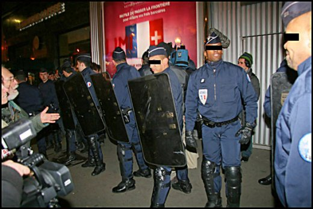
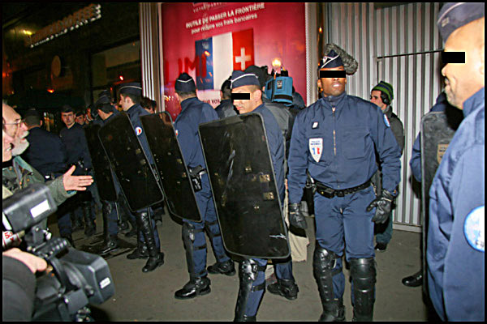

| |
Site dédié à la publication d'informations communiquées par le Collectif des déboulonneurs. En aucun cas ce site n'appelle à des actions illégales. | |
 |
||
|
Accueil du site > Paris > 14ème action de barbouillage à Paris
24 février 2007, 14h30 : 14è action de barbouillage à Paris 9 mars 2007, 9h00 : verdict du procès à Paris, nouveau procès à Alès A l’heure où JC Decaux et Clear Channel se battent à coups de vélos pour le contrôle du marché de l’affichage de la capitale, le Collectif des Déboulonneurs continue sa lutte contre l’invasion de la publicité dans notre vie quotidienne. Pour dénoncer cette agression permanente et insidieuse, face à l’inertie des autorités et à l’épuisement des recours légaux, nous mettons en place depuis 2005 des actions publiques et assumées de barbouillage d’affiches géantes 4x3 m. Ces actions non-violentes de désobéissance civile ont lieu simultanément à la fin de chaque mois dans plusieurs villes de France. Ce mois-ci : à Paris, Lyon, Nîmes, Rouen, La Rochelle. Avec les procès qui en résultent, les Déboulonneurs saisissent l’occasion de mettre ce débat sur la place publique. Prochaine action à Paris le samedi 24 février 2007, à 14 h 30 précises Rendez-vous : Quai de Jemmapes, au croisement avec la rue Alibert, 10è arrondt. (M° République ou Jacques Bonsergent) Nous invitons le public à venir nombreux apporter son soutien aux barbouilleurs. Le 26 janvier dernier, cinq membres du collectif de Paris avaient été interpellés boulevard des Capucines (2è arrondt.), après avoir barbouillé à visage découvert une série de cinq dispositifs de 4x3 m, en présence de 80 sympathisants. Une trentaine de policiers, équipés de boucliers anti-émeutes, avaient alors formé une barrière pour défendre les panneaux.

Vendredi 9 mars, procès en série à Paris et à Alès Le vendredi 9 mars à 9 h, au Palais de Justice de Paris (île de la Cité), sera rendu le verdict du procès du 12 janvier dernier, concernant les sept barbouilleurs du 28 octobre 2006. Ce procès devant la 29è chambre du Tribunal Correctionnel fut l’occasion de près de quatre heures de débats animés autour des nuisances du système publicitaire. Le procureur de la République a réclamé 500 € d’amende avec sursis pour chacun des prévenus. Le même jour, à la même heure, se tiendra le procès des 2 barbouilleurs du Collectif des déboulonneurs du Gard devant le Tribunal Correctionnel d’Alès, suite à l’action du 26 mai 2006 à Anduze. Plusieurs afficheurs-délinquants se portent partie civile dans ce procès, ce qui est une première ! Les revendications du Collectif :
Concert de soutien à Paris

|

|
Site utilisant SPIP - Hébergement Ouvaton
|